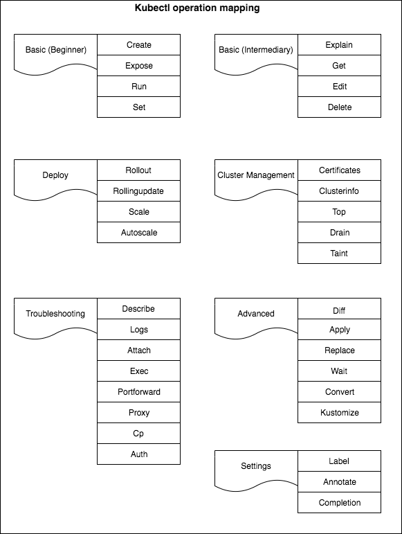

This is swiss-knife of the Kubernetes operator, the kubectl is a tools for translating declarative resources in Kubernetes objects via the API, so the operator can load, remove or update workloads, configurations and more.
The main source of truth is the Kubectl book but this post will try to summarize and organize the main capabilities of the tool.
Kubectl is a client for the master API server, you can confirm this fact settings the verbose to 8, and you can fetch both the request and the response.
kubectl run nginx8 --image=nginx -v=8 --generator=run-pod/v1
I1226 12:59:46.868834 22924 loader.go:375] Config loaded from file: /Users/amimknabben/.kube/config
I1226 12:59:46.878441 22924 request.go:968] Request Body:
{
"kind": "Pod",
"apiVersion": "v1",
"metadata": {
"name": "nginx8",
"creationTimestamp": null,
"labels": {
"run": "nginx8"
}
},
"spec": {
"containers": [
{
"name": "nginx8",
"image": "nginx",
"resources": {}
}
],
"restartPolicy": "Always",
"dnsPolicy": "ClusterFirst"
},
"status": {}
}
I1226 12:59:46.878511 22924 round_trippers.go:420] POST https://127.0.0.1:64462/api/v1/namespaces/default/pods
I1226 12:59:46.878519 22924 round_trippers.go:427] Request Headers:
I1226 12:59:46.878525 22924 round_trippers.go:431] Content-Type: application/json
I1226 12:59:46.878530 22924 round_trippers.go:431] Accept: application/json, */*
I1226 12:59:46.878535 22924 round_trippers.go:431] User-Agent: kubectl/v1.16.2 (darwin/amd64) kubernetes/c97fe50
I1226 12:59:47.074562 22924 round_trippers.go:446] Response Status: 201 Created in 196 milliseconds
I1226 12:59:47.074584 22924 round_trippers.go:449] Response Headers:
I1226 12:59:47.074596 22924 round_trippers.go:452] Cache-Control: no-cache, private
I1226 12:59:47.074602 22924 round_trippers.go:452] Content-Type: application/json
I1226 12:59:47.074607 22924 round_trippers.go:452] Content-Length: 1209
I1226 12:59:47.074612 22924 round_trippers.go:452] Date: Thu, 26 Dec 2019 17:59:47 GMT
I1226 12:59:47.077981 22924 request.go:968] Response Body: {"kind":"Pod","apiVersion":"v1","metadata":{"name":"nginx8","namespace":"default","selfLink":"/api/v1/namespaces/default/pods/nginx8","uid":"414b0331-b3e2-41ee-8b65-ca8edf10cbbd"...Resources are Kubernetes objects, and their configuration is applied (declarative Create/Update/Delette) to a Kubernetes cluster using tools such as kubectl, stored in an ETCd and then actuated by a controller. The documetation is available.
These basic types systems are defined by API machinery by Kinds (they are divided into API groups and versions). They are know as GVK (GroupVersionKind), these Kind objects are mapped to real golang types.
In the other side we have resources, they identify a set of HTTTP endpoints exposing the CRUD semantics of a certain object type, the GVRs. Long story short, GVKs are served under HTTP paths identified by GVRs, and this process of mapping GVKs to GVRs is called REST mapping.
The resources are identified by the following fields:
Resources also have TypeMeta, ObjectMeta, Spec (the desired state) and Status (the observed state)
For more information on the inner working: Life of a Kubernetes API Request by Daniel Smith, Google
We can see the grouping of commands here:
Settings, cluster and deploy commands are going to be checked further.
groups := templates.CommandGroups{
{
Message: "Basic Commands (Beginner):",
Commands: []*cobra.Command{
create.NewCmdCreate(f, ioStreams),
expose.NewCmdExposeService(f, ioStreams),
run.NewCmdRun(f, ioStreams),
set.NewCmdSet(f, ioStreams),
},
},
{
Message: "Basic Commands (Intermediate):",
Commands: []*cobra.Command{
explain.NewCmdExplain("kubectl", f, ioStreams),
get.NewCmdGet("kubectl", f, ioStreams),
edit.NewCmdEdit(f, ioStreams),
delete.NewCmdDelete(f, ioStreams),
},
},
{
Message: "Deploy Commands:",
Commands: []*cobra.Command{
rollout.NewCmdRollout(f, ioStreams),
rollingupdate.NewCmdRollingUpdate(f, ioStreams),
scale.NewCmdScale(f, ioStreams),
autoscale.NewCmdAutoscale(f, ioStreams),
},
},
{
Message: "Cluster Management Commands:",
Commands: []*cobra.Command{
certificates.NewCmdCertificate(f, ioStreams),
clusterinfo.NewCmdClusterInfo(f, ioStreams),
top.NewCmdTop(f, ioStreams),
drain.NewCmdCordon(f, ioStreams),
drain.NewCmdUncordon(f, ioStreams),
drain.NewCmdDrain(f, ioStreams),
taint.NewCmdTaint(f, ioStreams),
},
},
{
Message: "Troubleshooting and Debugging Commands:",
Commands: []*cobra.Command{
describe.NewCmdDescribe("kubectl", f, ioStreams),
logs.NewCmdLogs(f, ioStreams),
attach.NewCmdAttach(f, ioStreams),
cmdexec.NewCmdExec(f, ioStreams),
portforward.NewCmdPortForward(f, ioStreams),
proxy.NewCmdProxy(f, ioStreams),
cp.NewCmdCp(f, ioStreams),
auth.NewCmdAuth(f, ioStreams),
},
},
{
Message: "Advanced Commands:",
Commands: []*cobra.Command{
diff.NewCmdDiff(f, ioStreams),
apply.NewCmdApply("kubectl", f, ioStreams),
patch.NewCmdPatch(f, ioStreams),
replace.NewCmdReplace(f, ioStreams),
wait.NewCmdWait(f, ioStreams),
convert.NewCmdConvert(f, ioStreams),
kustomize.NewCmdKustomize(ioStreams),
},
},
{
Message: "Settings Commands:",
Commands: []*cobra.Command{
label.NewCmdLabel(f, ioStreams),
annotate.NewCmdAnnotate("kubectl", f, ioStreams),
completion.NewCmdCompletion(ioStreams.Out, ""),
},
},
Besides Jq (a sed like tools but for JSON data) being a very useful one, Kubectl comes with JSONPath cababilities (Like XPath but for JSON).
# Show the kind of all namespace deployments
kubectl get deployment -o=jsonpath='{.items[*].kind}{"\n"}'
Deplyoment
Deplyoment
# Iterate then name of all deployments and pipe to a delete command
kubectl get deployment.v1.apps -o=jsonpath='{range .items[*]}{.metadata.name}{"\n"}{end}' | xargs kubectl delete deployment
deployment.apps "nginx" deleted
deployment.apps "nginx2" deletedYou can list the available resources with api-resources and get the documentation with explain:
$ kubectl api-resources
NAME SHORTNAMES APIGROUP NAMESPACED KIND
...
customresourcedefinitions crd,crds apiextensions.k8s.io false CustomResourceDefinition
...
---
$ kubectl explain crd
KIND: CustomResourceDefinition
VERSION: apiextensions.k8s.io/v1
DESCRIPTION:
CustomResourceDefinition represents a resource that should be exposed on
the API server. Its name MUST be in the format <.spec.name>.<.spec.group>.
FIELDS:
apiVersion <string>
APIVersion defines the versioned schema of this representation of an
object. Servers should convert recognized schemas to the latest internal
value, and may reject unrecognized values. More info:
https://git.k8s.io/community/contributors/devel/sig-architecture/api-conventions.md#resources
kind <string>
Kind is a string value representing the REST resource this object
represents. Servers may infer this from the endpoint the client submits
requests to. Cannot be updated. In CamelCase. More info:
https://git.k8s.io/community/contributors/devel/sig-architecture/api-conventions.md#types-kinds
metadata <Object>
spec <Object> -required-
spec describes how the user wants the resources to appear
status <Object>
status indicates the actual state of the CustomResourceDefinitionsource <(kubectl completion zsh|bash)The autogenerated documentation can be found here.
Here are the summary of the tasks related with kubectl from official documentation.
https://kubernetes.io/docs/tasks/tools/install-kubectl/ https://kubernetes.io/docs/tasks/administer-cluster/access-cluster-api/ https://kubernetes.io/docs/tasks/administer-cluster/access-cluster-services/ https://kubernetes.io/docs/tasks/administer-cluster/extended-resource-node/ https://kubernetes.io/docs/tasks/administer-cluster/namespaces-walkthrough/ https://kubernetes.io/docs/tasks/manage-kubernetes-objects/declarative-config/ https://kubernetes.io/docs/tasks/manage-kubernetes-objects/kustomization/ https://kubernetes.io/docs/tasks/manage-kubernetes-objects/imperative-command/ https://kubernetes.io/docs/tasks/manage-kubernetes-objects/imperative-config/ https://kubernetes.io/docs/tasks/extend-kubectl/kubectl-plugins/